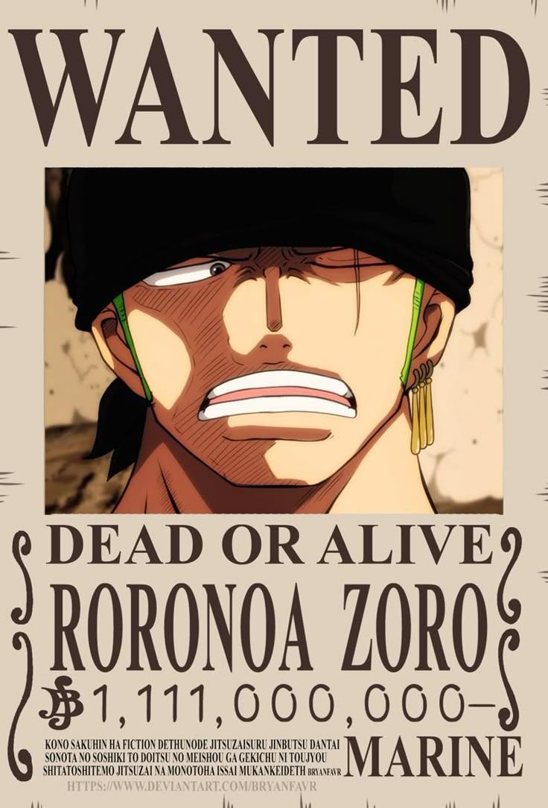
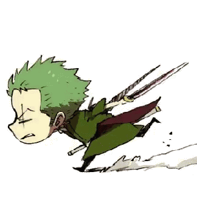

Roronoa Zoro juga dikenal sebagai "Pemburu Bajak Laut" Zoro merupakan pejuang utama dari Bajak Laut Topi Jerami, salah satu dari dua pendekar mereka dan salah satu Perwira Senior dari Armada Besar Topi Jerami dan secara publik diakui sebagai tangan kanan dari kapten Monkey D. Luffy. Sebelumnya Zoro merupakan pemburu hadiah dan setelah bergabung ke dalam kru Topi Jerami dia secara resmi menjadi anggota kedua kru Luffy dan yang pertama bergabung, pada Arc Romance Dawn.

Lahir di East Blue, Zoro adalah putra Tera dan Roronoa Arashi, cucu dari Shimotsuki Furiko dan Roronoa Pinzoro, dikarenakan menjadi cucu dari Shimotsuki Furiko yang menjadikannya keturunan asli dari Keluarga Shimotsuki dari Negara Wano dan samurai legendaris, Shimotsuki Ryuma. Sebagai ahli Gaya Tiga Pedang, gaya ilmu pedang yang ia ciptakan selama pelatihan masa kecilnya di Desa Shimotsuki, Zoro adalah salah satu dari tiga petarung paling kuat di Topi Jerami, bersama Luffy dan Sanji , yang disebut sebagai "Trio Monster". Impiannya adalah menjadi pendekar pedang terhebat di dunia, untuk memenuhi janji yang dia buat kepada mendiang teman masa kecilnya Kuina.
Selain keburukannya sebagai salah satu Topi Jerami dan sebagai mantan pemburu hadiah, harga buronannya yang cukup besar saat tiba di Kepulauan Sabaody menyebabkan Zoro, bersama dengan Luffy termasuk di antara sebelas "Super Rookie", Zoro merupakan anggota bajak laut yang secara bersamaan mencapai Red Line dengan harga buronan lebih dari 100.000.000 sesaat sebelum Perang Puncak.

Zoro memperoleh bounty pertamanya sebesar 60.000.000 setelah Arc Alabasta. Kemudian meningkat menjadi 120.000.000 setelah insiden Enies Lobby, kemudian meningkat lagi menjadi 320.000.000 setelah Arc Dressrosa. Setelah Raid on Onigashima, harga buronannya ditingkatkan menjadi 1,111,000,000.